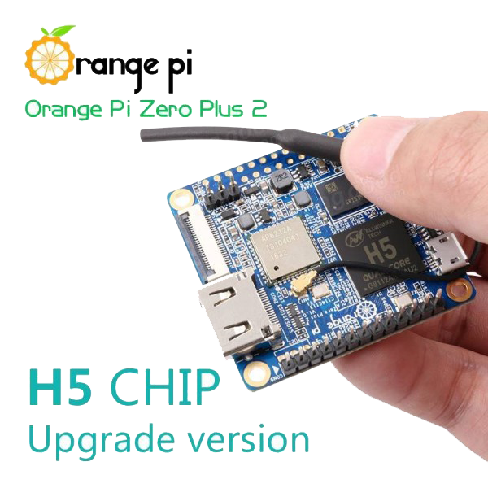

MAXIOT სისტემის პლატფორმა¶
დოკუმეტაციის ამ სექციაში განიხილება, MAXIOT სისტემისთვის საჭირო “ჰარდის” პარამეტერები და რესურსები
MAXIOT სისტემის მიკროკომპიუტერი¶
MAXIOT სისტემის ყველა ძირითადი პროგრამული მოდულები დაწერილია ისე, რომ სრულფასოვნად გაეშვას ისეთი მიკროკომპიუტერებზე, როგორც არის Raspberry pi , Orange pi და სხვა. მცირე ზომის ერთდაფიანი მიკროკომპიუტერები მრავლად არის წარმოდგენილი თანამედროვე ბაზარზე. მიკროკომპიუტერები ერთმანეთისგან განსხვავდება სხვადასხვა პერიფერიული მოწყობილობათა კომლექტაციით, პროცესორის წაროებლით, ოპერატიული მეხსირების რაოდენობით და სხვა. ყელა მიკროკომპიუტერის პროცესორის არქიტეკტურა 32 და 64 ბიტიანი ARM Cortex. MAXIOT სისტემის შექმნილია ისე რომ ის ეშვებოდეს ისეთი მცირე ზომის მიკროკომპიუტერებზე როგორიც არის Raspberry pi zero და Orange pi zero.
{kind=link}
შენიშვნა: სუსტი მიკროკომპიუტერის არჩევის შემთხვევაში, ჩვენ უნდა გავითვალისწინოთ ის ფატორი რომ, ჩვენ ვიქნებით შეზღუდული კომპიუტერული რესურსებში, რაც უცილებლად არის გასათვალისწინებელი რადგან გარდა MAXIOT სისტემის მოდულებისა, ამავე მიკროკოპიუტერებზე ხდება სხვადასხვა დამაებითი პროგრამების გაშვება, რომლებიც ამდიდრებენ MAXIOT სისტემის დამატებითი შესაძლებლობებით. მაგალითად მონაცემთა ბაზები, რომლებიც უზრუნველყოფენ მინაცემების დაგროვებას ანდა მინაცემთა ასახვის პლიკაციები, რომლებიც უზრუნველყოფენ მონაცემების ასახვას სხვადასხვა სტილის გრაფიკების და ჩართების საშულაებით.
- დასკვნა:
MAXIOT სისტემა შეიძლება განთავსდეს პრაქტიკულად, ლინუქსი ოპერაციული სისტემის ქვეშ მომუშავენებისმიერი ნებისმიერი მიკროკომპიუტერში ან ვირტულაურ პლათფორმებზე როგორიცაა VirtualBox ან VmWare. მნიშვნელობა არა აქვს იქნება კომპიუტერს პროცესორის არქიტეკტურა ARM თუ x86.
ოპერატიული მეხსიერება¶
ოპერატიული მეხსიერება მიკროკომპიუტერის სისტემაში შემავალი ერთერთი ძალიან მნიშვნელოვანი ნაწილიs წარმოადგენს. პრაქტიკულად ყველა აპლიკაცია რომელიც გაშვებულია მიკროკომპიუტერში, ოპერაციულ სისტემის ჩათვლით იყენებს სხვადასხვა რაოდენობის ოპერატიულ მეხიერებას. ზოგიერთ შემტხვევაში აპლიკაციის მიერ გამყენებული ოპერატიული მეხსიერების რაოდენობა დინამიურად იცვლება. გამოყენებული მეხიერების ზრდა ხდება, აპლიკაციაზე დატვრთვის ზრდასთან ერთად. MAXIOT სისტემაში შემავალი ზოგიერთი პროგრამული მოდული ასევე განიცდის ოპერატიული მეხსიერების გამოყენების ზრდას - რაც უფრო მეტ ობიექტს ამუშავებს სისტემა, მით მეტი ოპერარტიულ მეხსიერებაა საჭირო. ამიტომ ეს ფაქტორი აუცილებლად უნდა გავითვალისწინოთ ჩვენი სისტემისთვის მიკროკომპიუტერის შერჩევის დროს. მაგალითად Raspberry pi zero-ს სულ 512 მეგაბაიტი ოპერატიული მეხსიერება გააჩნია, რაც საკმაოდ პატარა, თუმცა საკმარისი მცირე ამოცნაბის შესასრულებლად.

დამატებითი პერიფერიული მოწყობილობა¶
MAXIOT სისტემა შეიძლება განთავსდეს პრაქტიკულად ნებისმიერ მიკროკომპიუტერში. იმის და მიხედვით თუ რაოდენობის და რა სირთულის ამოცანები აქვს შესასრულებელი MAXIOT სისტემას, საჭიროა სწორედ განისაზგვროს მიკროკომპიუტერის პროცესორის და ოპერატიული მეხსიერების რესურსები. გარდა ამისა სისტემის მიმართ დასმული ამოცანა შეიძლება ითხოვდეს გარკვეულ პერიფერიული მოწყობილობების არსებობას. შეიძლება მოხდეს ისე რომ პროცესორის და ოპერატიული მეხსიერების რესურსების მიხედვით შერჩეულ მიკროკომპიუტერ არ გააჩნდეს ესა თუ ის პერიფერიული მოწყობილობა ან თუ გააჩნია არ ქონდეს საჭირო პარამეტრები. ასეთ შემთხვევაში უნდა მოხდეს საჭირო პერიფერიული მოწყობილობის დამატება. მიკროკომპიუტერებს გააჩნიათ გარე პერიფერიული მოწყობილობების მიერთებისთვის საჭიროა სხვადასხვა პორტები (ხშირ შემთხევეაში ეს არის USB პორტი). თუ ასეთი პორტი არ გამოიძებნა უნდა შეიცვალის მიკროკომპიუტერი ანდა მოხდეს ალტერნატიული პერიფერიული მოწყობილობის მოძიება.
მაგალითი: სისტემის მიმართ დასმული ამოცანის მიხედვით, შეიძლება საჭირო გახდეს მონაცემთა უკაბელო გადაცემის გამოყენება. არსებობს მონაცემთა უკაბელო გადაცემი სხვადასხვა სტანდარტები (WiFi, IrDA, Bluetooth, LoRa … ). თუ ამოცანა ითხოვს WiFi ტექნოლოგიის გამოყენებას, მაშინე უნდა შევარჩიოთ მიკროკომპიუტერი რომ გააჩნდეს დაფაზე განთავსებული WiFi მოდული და იმ შემთხვევაში თუ ეს მოდული არ აკმაყოფილებს დასმული ამოცანის მოთხოვნებს (ზალიან სუსტი გადაცემა- მუსაობს მოხოლოდ მოკლე დისტანციებზე) ან საერთოდ არ არსებობს დაფაზე , მაშინ ცვენ უნდა ფამოვიყენოთ WiFi გარე მოდული. ხშირ შემთხვევაში გარე მოდულები იყენებენ USB პორტებს.